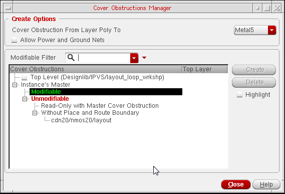
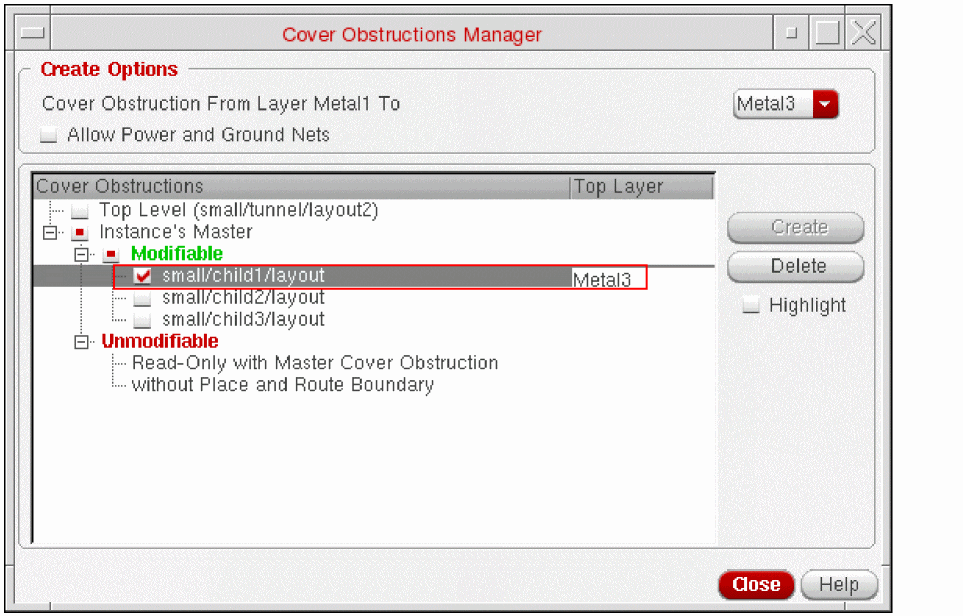

7
Managing Cover Obstructions While Routing
You can now manage cover obstructions while routing using the Cover Obstruction Manager form. The Cover Obstruction Manager form allows you to create, edit, and display the cover obstruction information at the current level as well as for level-1 instances. For an editable master instantiated at the top, the cover obstruction information is stored directly into the master. However, for read-only masters, the cover obstruction information is stored in the top-level design. In the top-level design, some information, such as shapes, vias, and presence of instances lower in the hierarchy, contained in the instantiated masters is not necessary for the router. In addition, you can route an instance at the top-level even if there are instances down in the hierarchy, which have cover obstructions existing on them. Using this feature, you can:
- Improve the routing performance in terms of memory usage and CPU time.
- Keep the layout views instantiated on top of the design without a need to abstract and re-master the views.
- Filter out all the unnecessary information for the router and also specify metal obstructions.
You cannot override any existing cover obstruction information; if you need to, then first remove it. For a read-only master, ensure that you change its write access before deleting any cover obstruction.
Defining a Cover Obstruction
To define a cover obstruction:
-
Choose Tools – Cover Obstruction Manager to open the Cover Obstructions Manager form.
The Cover Obstructions Manager form automatically checks the masters of the currently selected instances that can either be modified or deleted. Also, in the layout window, the instances corresponding to the master instances selected in the tree widget automatically appear as selected. - Select the layer range to be obstructed by selecting the layer from the Cover Obstruction From Layer Metal1 To drop-down list in the Create Options group box.
- To allow power and ground nets to route through obstructions, select the Allow Power and Ground Nets check box in the Create Options group box. Routing of power and ground nets can be allowed only if the cover obstruction is on the prBoundary of the master. It cannot be allowed if the cover obstruction is on the top-level layout. By default, the Allow Power and Ground Nets check box is deselected.
- The top-level design can have many instances.To filter out the instances in the instance master tree, use the Modifiable Filter search widget. Specifiying the search criteria allows you to reduce the master list and quickly identify the instances to operate on.
-
Select an instance’s master on which you want to create the cover obstruction from the Instance's Master tree widget. This tree widget displays all instance masters and top-level cellviews that are there in the current design. The instance master in a design can be of the following three types:
-
Modifiable
An Instance’s Master that allows creation and deletion of cover obstructions. In addition, it does not have a cover obstruction on both prBoundary and the instance headers. -
Unmodifiable
An instance master that does not allow creation and deletion of cover obstructions. Such instances are further divided into the following two categories:-
Read-only with Master Cover Obstruction
The instance’s masters that have cover obstruction defined on its prBoundary but the master itself is read-only. To delete the instance’s master cover obstruction, you need to get the write permission on master files.The read and write permissions of an instance’s master are not determined by the master's shell permission on the UNIX (Linux) file system. The permissions are determined from the current master's mode in Virtuoso, which in turn is determined when the Virtuoso layout reads the master from the hard disk. -
without Place and Route Boundary
The instance’s master that do not have prBoundary data and cannot define cover obstruction. Place and route boundary is required for creating and deleting cover obstructions. -
without Place and Route Boundary
The instance’s master that do not have prBoundary data and cannot define cover obstruction. Place and route boundary is required for creating and deleting cover obstructions.
-
Read-only with Master Cover Obstruction
-
Deletable Only
Those master instances that have cover obstruction defined on both prBoundary and instance headers.
-
Modifiable
-
To add cover obstructions at the current level, that is, on the prBoundary shape, select the check box next to Top Level and then click the Create button.
-
To add the cover obstruction on Instance’s Master, select the check box next to the required instances from the Instance's Master tree widget and click Create. The following figure shows an example, where cover obstruction is created on instance
small/child1/layout. After the cover obstructions have been defined, the related information gets displayed in the Top Layer column as shown in the following figure. If the Top Layer column is empty, it means no cover obstruction has been defined for that particular Instance’s Master.
The state of the Create and Delete buttons gets updated according to the selection of the Instance’s Master.- If all selected masters already have cover obstructions, the Create button appearsas disabled.
- If all selected masters do not have cover obstructions, the Delete button appears as disabled.
- If some Instance’s Master have cover obstruction and some do not, the Create button appears as disabled but the Delete button is enabled.
- If none of the Instance’s Masters are selected, both the Create and Delete buttons are disabled.
Removing a Cover Obstruction
To remove cover obstruction, select the instance and then click the Delete button. The Delete button is disabled if the instance(s) on which the cover obstruction appears are not selected. Once the cover obstruction is deleted, the Top Layer column in the tree widget appears empty.
Viewing a Cover Obstruction
To view the defined cover obstruction in the layout canvas, select the Highlight check box. The instances that belong to the master with the defined cover obstruction get highlighted. The highlight in the layout design uses true color display based on the color of the top metal layer. The instances are highlighted with a plain halo. At the top level, the prBoundary shows a line halo, as shown in the following figure.
Return to top